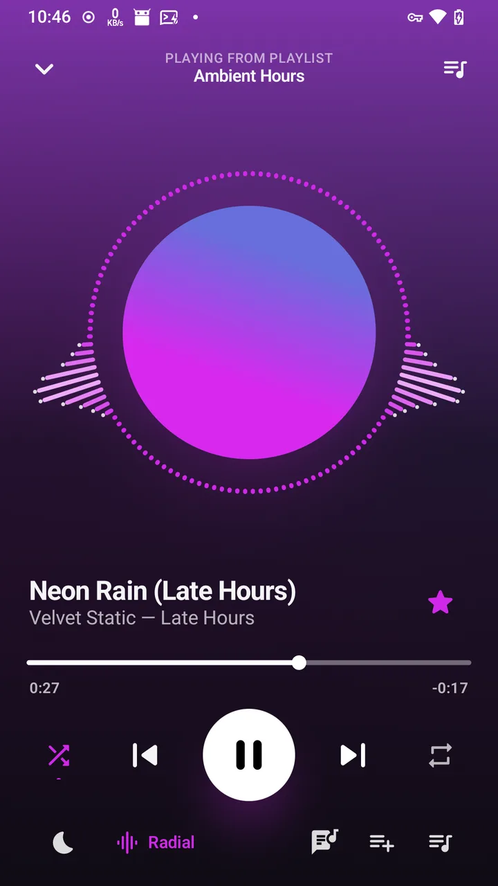

musikbox is a music player for your own Navidrome or Subsonic server, built around your playlists. They open instantly, play offline, and stay in sync between your phone and your Linux desktop.
Free and open source under the GPL-3.0. Version 1.0.8, Android 12 and newer.

What you need
musikbox brings no music and no streaming service. It plays what you own, from a server you run.
-
Your music files
MP3, FLAC, Opus, AAC and the rest, on a hard disk or SSD.
-
A Navidrome server
Navidrome runs on an always-on computer that has your music: a home server, a NAS, a Raspberry Pi or a rented server. Other Subsonic-compatible servers work too.
-
A way to reach it
At home, the server's local address is enough. Away from home, forward a port on your router to Navidrome, or better, put it behind a reverse proxy with HTTPS. A VPN into your home network works too.
Built around your playlists
Most players start from albums and artists. musikbox starts from the playlists you already made, and keeps them close.
Also: saved playlists and history sync between your devices through your server, Continue here picks up another device's queue where it left off, plus a sleep timer, scrobbling, and media keys on the Linux desktop.
Download
-
Get the latest APK
Android
Android 12 and newer. Every release is signed with the same key, so updates install over the top.
-
Early 2027
F-Droid
musikbox is joining the F-Droid catalogue. Until then, download the APK above; F-Droid's version will be the same signed app.
-
Install instructions
Linux desktop
The same app for your desktop, with media keys and Plasma or GNOME controls. Needs mpv; one script builds and installs it.
-
View on GitHub
Source code
Free software under the GPL-3.0. Issues and contributions are welcome on GitHub.